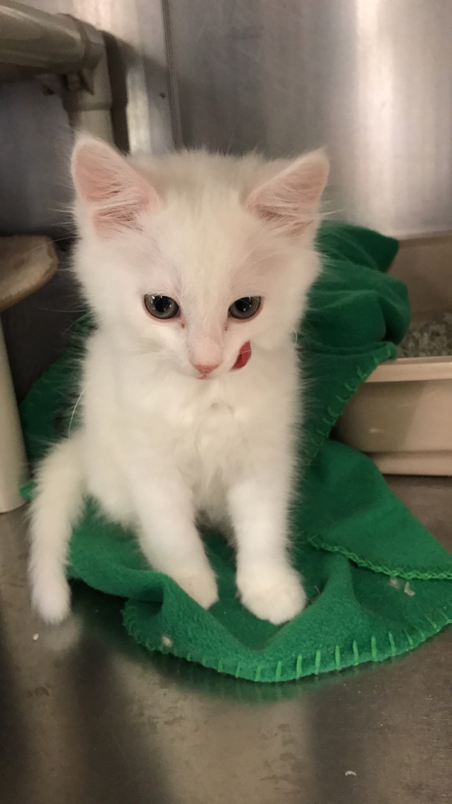

travis
Experience |
|
Humane Society Volunteer {2013-2018}Animal WelfareFor 5 years, I volunteerd at a local animal shelter (The Humane Society of Eastern Carolina). My responsibilities included socializing, grooming, and feeding cats and dogs. I represented the organiztion off site at Petco and PetSmart, where I consulted families on potential adoption. The Humane Society helped me develop interpersonal relationships and learn how to consult people on various issues while remaining professionsal. |
 |
Stage Lighting Design {2012-2019}Arts & CultureThroughout highschool, I enjoyed designing lighting scenes for over thirty preformances at multiple locations. I designed scenes and operated the board during talent shows, concerts, and musicals. Programming lighting scenes allowed me to express my creative side while contibuting to my school, which left a lasting impact. |